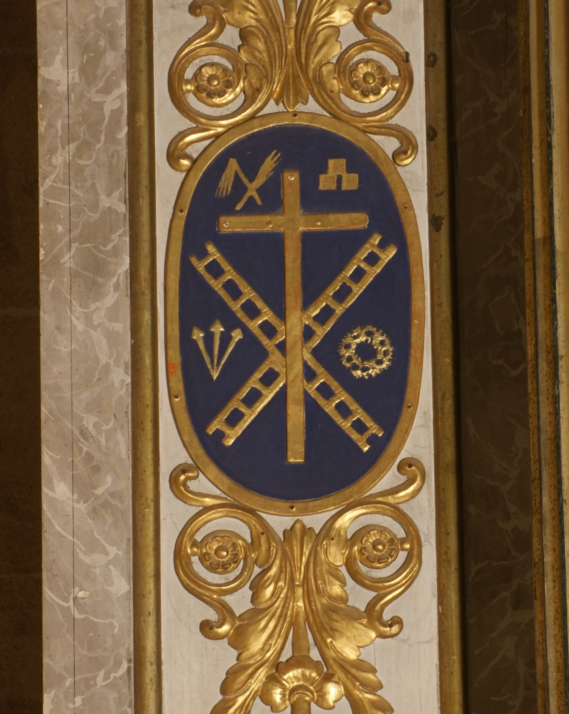

Els emblemes de la Passió, o Arma Christi, són un conjunt d’objectes associats al patiment i la mort de Jesucrist que amb el temps s’han convertit en símbols de devoció cristiana. En aquest relleu hi apareixen els següents: la creu on Jesús va ser crucificat; els claus amb què va ser clavat a la creu; les escales utilitzades durant la crucifixió i el davallament de la creu; la corona d’espines amb què va ser objecte de burla i turment; els flagells amb què va ser assotat, i els daus amb què els soldats romans es jugaren la roba de Jesús a sorts.